第九章 UART
9.1 通信协议¶
- 通信的目的： 将一个设备的数据传送到另一个设备，扩展硬件系统
- 通信协议： 制定通信的规则，通信双方按照协议规则进行数据收发
| 名称 | 引脚 | 双工 | 时钟 | 电平 | 设备 |
|---|---|---|---|---|---|
| USART | TX、RX | 全双工 | 异步 | 单端 | 点对点 |
| I2C | SCL、SDA | 半双工 | 同步 | 单端 | 多设备 |
| SPI | SCLK、MOSI、MISO、CS | 全双工 | 同步 | 单端 | 多设备 |
| CAN | CAN_H、CAN_L | 半双工 | 异步 | 差分 | 多设备 |
| USB | DP、DM | 半双工 | 异步 | 差分 | 点对点 |
双工：指通信双方是否可以同时进行双向通信（发送和接收）。
单工：数据只能从一个设备到另一个设备，不能反着来。
时钟： I2C 和 SPI 有单独的时钟线，所以是同步。
电平：单端信号，即引脚的高低电平是相对GND的电压差，所以需要共地。
9.2 串口通信¶
9.2.1 串口通信简介¶
- 串口是一种应用十分广泛的通讯接口，串口成本低、容易使用、通信线路简单，可实现两个设备的互相通信
- 单片机的串口可以使单片机与单片机、单片机与电脑、单片机与各式各样的模块互相通信，极大地扩展了单片机的应用范围，增强了单片机系统的硬件实力
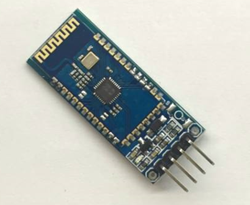

9.2.2 硬件电路¶
- 简单双向串口通信有两根通信线（发送端TX和接收端RX）
- TX与RX要交叉连接
- 当只需单向的数据传输时，可以只接一根通信线
- 当电平标准不一致时，需要加电平转换芯片
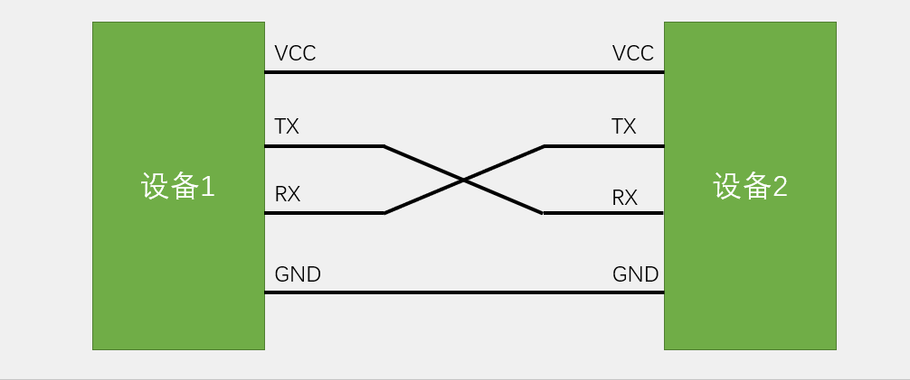
9.2.3 电平标准¶
- 电平标准是数据1和数据0的表达方式，是传输线缆中人为规定的电压与数据的对应关系，串口常用的电平标准有如下三种：
- TTL电平：+3.3V 或 +5V 表示 1，0V 表示 0
- RS232电平：-3 至 -15V 表示 1，+3 至 +15V 表示 0
- RS485电平：两线压差 +2 至 +6V 表示 1，-2 至 -6V 表示 0（差分信号）
9.2.4 串口参数及时序¶
- 波特率： 串口通信的速率
- 起始位： 标志一个数据帧的开始， 固定为低电平
- 数据位： 数据帧的有效载荷，1 为高电平，0 为低电平，低位先行
- 校验位： 用于数据验证，根据数据位计算得来(无校验、奇校验--即保持二进制数据1的个数为奇数、偶校验)
- 停止位： 用于数据帧间隔， 固定为高电平
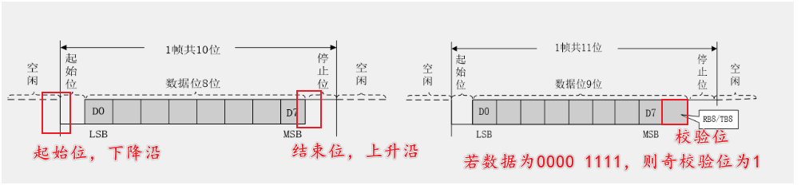
Note
校验位分为--奇校验--偶校验--无校验--三种。无校验即为上图左侧效果，奇偶校验即为判断数据高电平的个数是为奇数或是偶数，在最后补一位校验位。例如，若为奇校验且数据中有奇数个高电平，则最后一位补一个 1 ，否则补一个 0 ，偶校验则同理类似。
9.3 USART外设¶
9.3.1 USART介绍¶
- USART（Universal Synchronous/Asynchronous Receiver/Transmitter）通用同步/异步收发器
- USART是STM32内部集成的硬件外设，可根据数据寄存器的一个字节数据自动生成数据帧时序，从TX引脚发送出去，也可自动接收RX引脚的数据帧时序，拼接为一个字节数据，存放在数据寄存器里
- 自带波特率发生器，最高达4.5Mbits/s
- 可配置数据位长度（8/9）、停止位长度（0.5/1/1.5/2）
- 可选校验位（无校验/奇校验/偶校验）
- 支持同步模式、硬件流控制、DMA、智能卡、IrDA、LIN
STM32F103C8T6 USART资源： USART1、 USART2、 USART3
9.3.2 USART框图¶
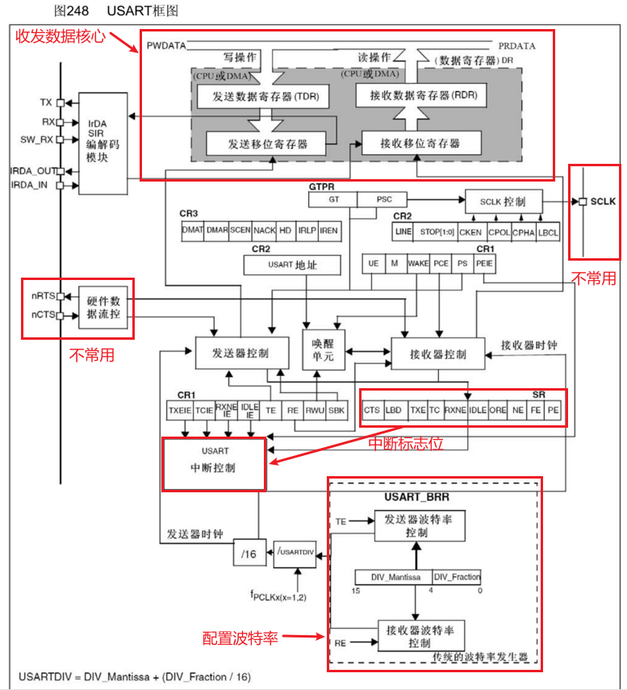
- 硬件数据流控
- RTS：发送端指示接收端是否准备好接收数据。
- CTS：接收端指示发送端是否可以继续发送数据。
- SCLK 引脚
- USART 的 SCLK 引脚用于同步时钟，此模式需要主设备生成时钟信号，供从设备同步接收/发送数据。
- 波特率发生器
- 根据外设时钟频率（f_PCLK）和期望波特率，计算并设置波特率寄存器（BRR）的值。
- 类似于分频器。
Warning
以上均简单了解即可。
9.3.3 USART数据收发结构¶
- 首先由波特率发生器配置发送和接受的频率
- 开始写操作，把数据放到发送数据寄存器暂存，若发送移位寄存器为空，则将发送数据寄存器的数据转运到发送移位寄存器，最后通过TX引脚发送数据。
- 开始读操作，把RX引脚接收的数据放到接收移位寄存器暂存，若接收数据寄存器为空，则将接收移位寄存器的数据转运到接收数据寄存器。
- 当一个字节的数据发送或接收完成后，会置标志位。
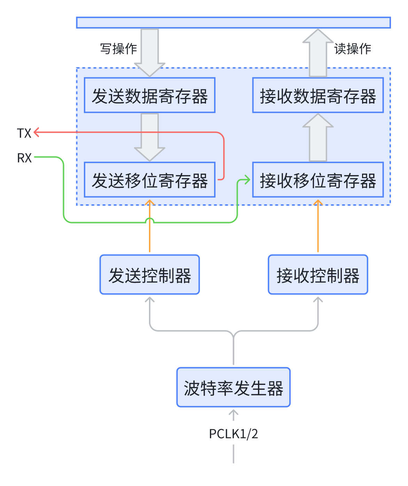
9.4 工程配置¶
9.4.1 STM32CubeMX参数¶
USART模式选择
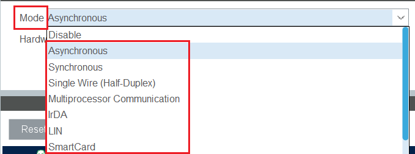
| 模式 | 特点 | 应用场景 |
|---|---|---|
| Asynchronous（异步模式） | 无需同步时钟，简单、常用 | 标准串口通信，如传感器和模块连接 |
| Synchronous（同步模式） | 使用时钟同步，支持更高传输速率 | 高速通信，主设备与外设通信 |
| Single Wire(Half-Duplex)（单线半双工） | 收发共用一根线，节省引脚资源 | 资源受限场景，带地址的多设备通信 |
| Multiprocessor Communication（多处理器通信模式） | 一主多从结构，主设备通过地址选择从设备 | 复杂系统的一主多从通信，如网络通信 |
| IrDA（红外通信） | 短距离红外数据传输 | 遥控器、短距离无线通信 |
| SmartCard（智能卡模式） | 支持 ISO 7816 标准，适用于安全通信 | 银行系统、门禁卡读写器 |
Danger
只有Asynchronous为常用的，其他仅作为了解。
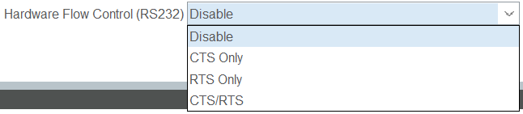
Hardware Flow Control 即STM32 USART 的硬件数据流控选项
| 流控模式 | 描述 | 应用场景 |
|---|---|---|
| Disable | 无流控，简单模式 | 低速通信、无可靠性要求场景 |
| CTS Only | 发送端受接收端控制 | 接收端缓冲区可能较小的场景 |
| RTS Only | 接收端控制发送端 | 发送端数据可能频繁产生的场景 |
| CTS & RTS | 双向流控 | 高速通信或可靠性要求高的场景 |
Danger
作为了解，并不常用。
9.4.2 USART标准示例¶
STM32CubeMX参数：
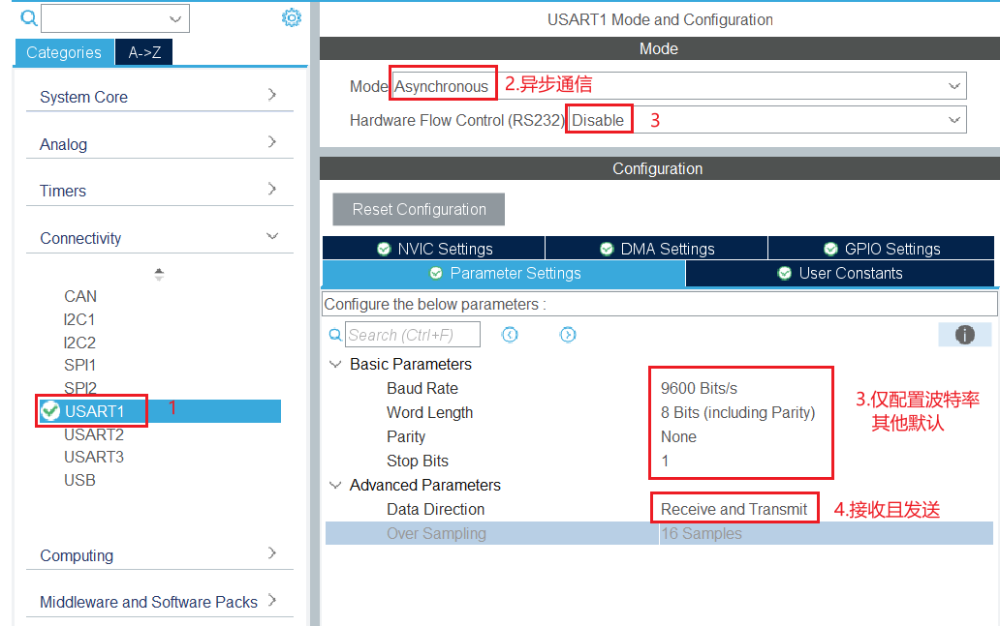
串口软件参数参考：
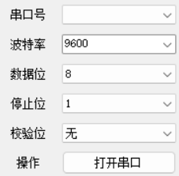
9.4.3 串口发送代码¶
HAL_UART_Transmit(&huart1, text, 1, 10);为发送函数
text为发送的数据数组- 1 为数据长度
- 100 为等待时间，ms
/* USER CODE BEGIN 2 */
uint8_t text[] = {0x43};
/* USER CODE END 2 */
/* Infinite loop */
/* USER CODE BEGIN WHILE */
while (1) {
HAL_UART_Transmit(&huart1, text, 1, 100);
HAL_Delay(1000);
/* USER CODE END WHILE */
/* USER CODE BEGIN 3 */
}
/* USER CODE END 3 */
经过使用示波器观察，从左向右数据为11000010，然注意串口是从低位先发，所以应该反过来读即实际数据为01000011 ，也就是16进制所表示的0x43
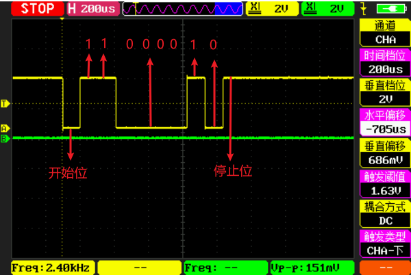
9.4.4 串口接收代码¶
HAL_UART_Receive(&huart1, receiver, 2, HAL_MAX_DELAY); 为接收函数，
HAL_MAX_DELAY表示一直等待指定收到数据receiver接收的数据存储的数组- 2 表示数据长度
/* USER CODE BEGIN 2 */
uint8_t receiver[2];
/* USER CODE END 2 */
/* Infinite loop */
/* USER CODE BEGIN WHILE */
while (1) {
HAL_UART_Receive(&huart1, receiver, 2, HAL_MAX_DELAY);
HAL_UART_Transmit(&huart1, receiver, 2, 100);
/* USER CODE END WHILE */
/* USER CODE BEGIN 3 */
}
/* USER CODE END 3 */
9.4.5 串口中断¶
记得在STM32CubeMX打开中断
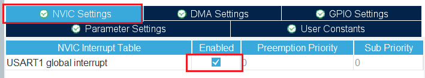
使用中断的接收和发送函数如下：
// 以中断方式发送数据
HAL_UART_Transmit_IT(&huart1, receiver, 1);
// 以中断方式接收数据
HAL_UART_Receive_IT(&huart1, receiver, 1);
接收和发送后处理逻辑的中断：
//用户可以在此回调函数中处理发送完成后的逻辑
void HAL_UART_TxCpltCallback(UART_HandleTypeDef *huart);
//用户可以在此回调函数中处理接收到的数据。
void HAL_UART_RxCpltCallback(UART_HandleTypeDef *huart);
将接收数据的数组声明为全局变量：
while 循环前声明一次中断接收数据函数：
使用接收到数据后的中断函数，在函数结束后再次声明中断接收数据函数，保证下次接收顺利并可以进入中断，放在main函数中:
/* USER CODE BEGIN 4 */
void HAL_UART_RxCpltCallback(UART_HandleTypeDef *huart) {
HAL_UART_Transmit_IT(&huart1, receiver, 1);
HAL_UART_Receive_IT(&huart1, receiver, 1);
}
/* USER CODE END 4 */
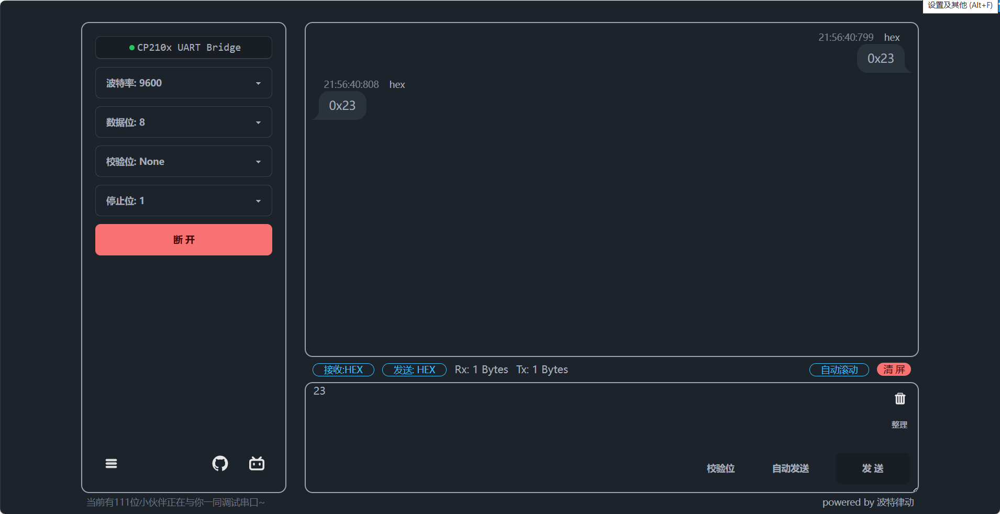
9.5 数据包接收¶
9.5.1 数据模式¶
- HEX模式/十六进制模式/二进制模式：以原始数据的形式显示
- 文本模式/字符模式：以原始数据编码后的形式显示
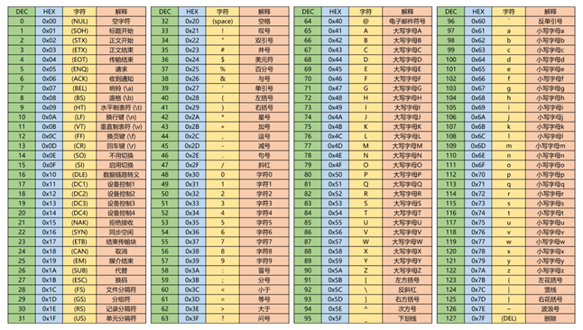

9.5.2 HEX数据包¶
- 固定包长，含包头包尾
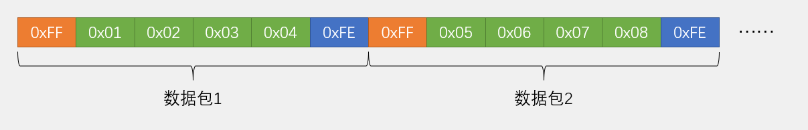
- 可变包长，含包头包尾
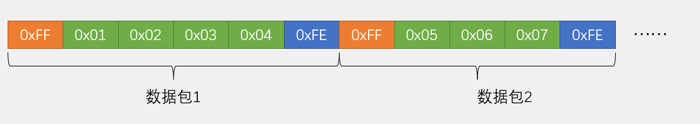
9.5.3 文本数据包¶
- 固定包长，含包头包尾
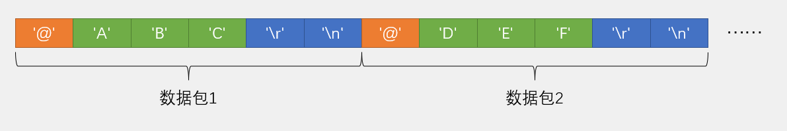
- 可变包长，含包头包尾
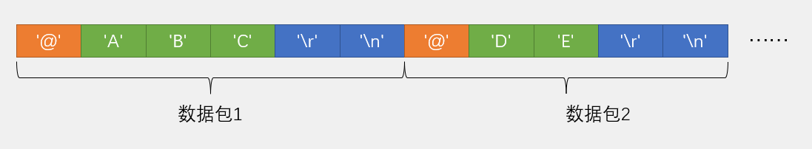
9.5.4 HEX数据包接收¶

9.5.5 文本数据包接收¶